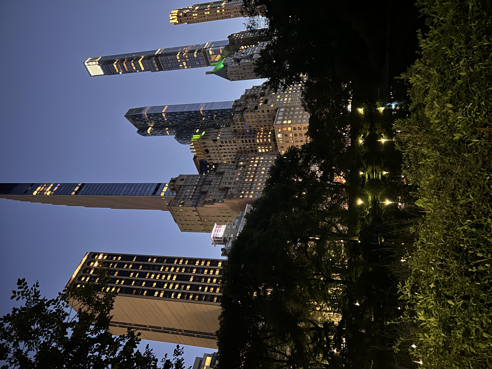
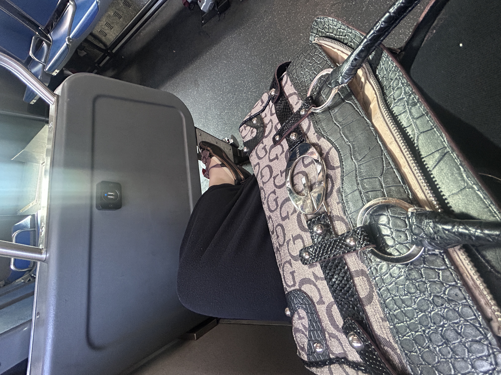

heading home

location: exiting the park
after an eventful day, i packed up and left the park at sunset. i like to see the buildings light up when the park gets dark but i get scared if it's dark and i'm lost. i took the bus home and enjoyed eavesdropping on random conversations to end my day.

the sun has set
on the bus home